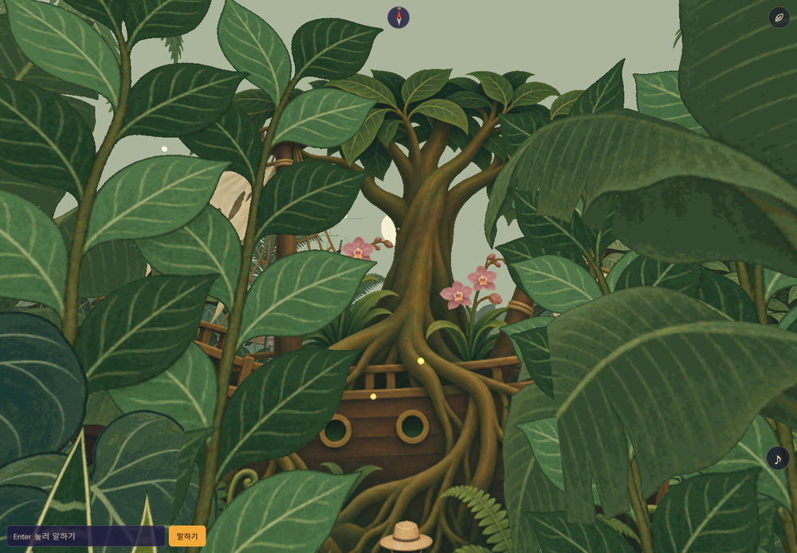
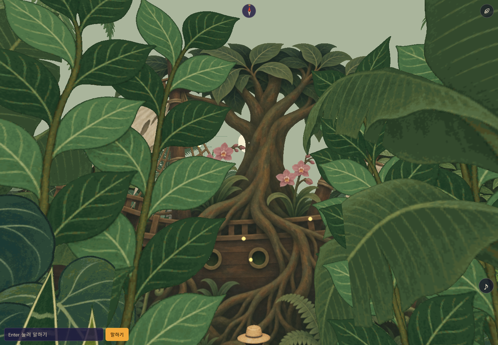
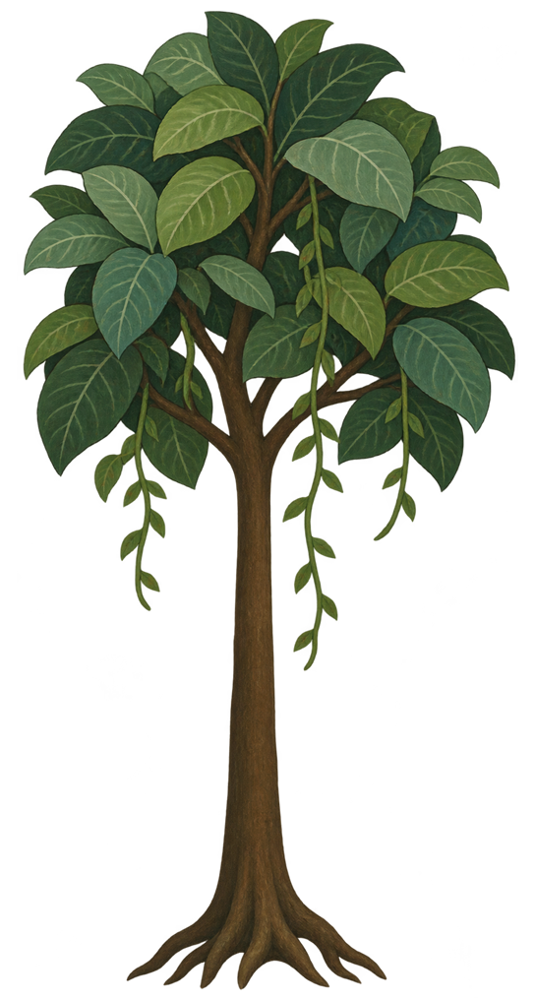
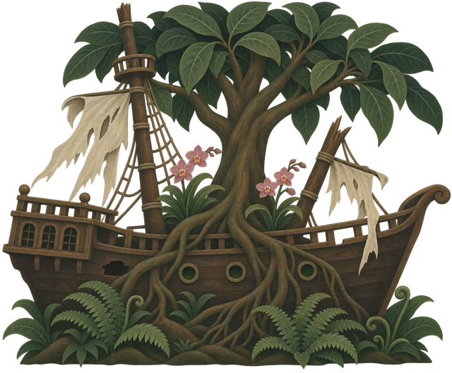
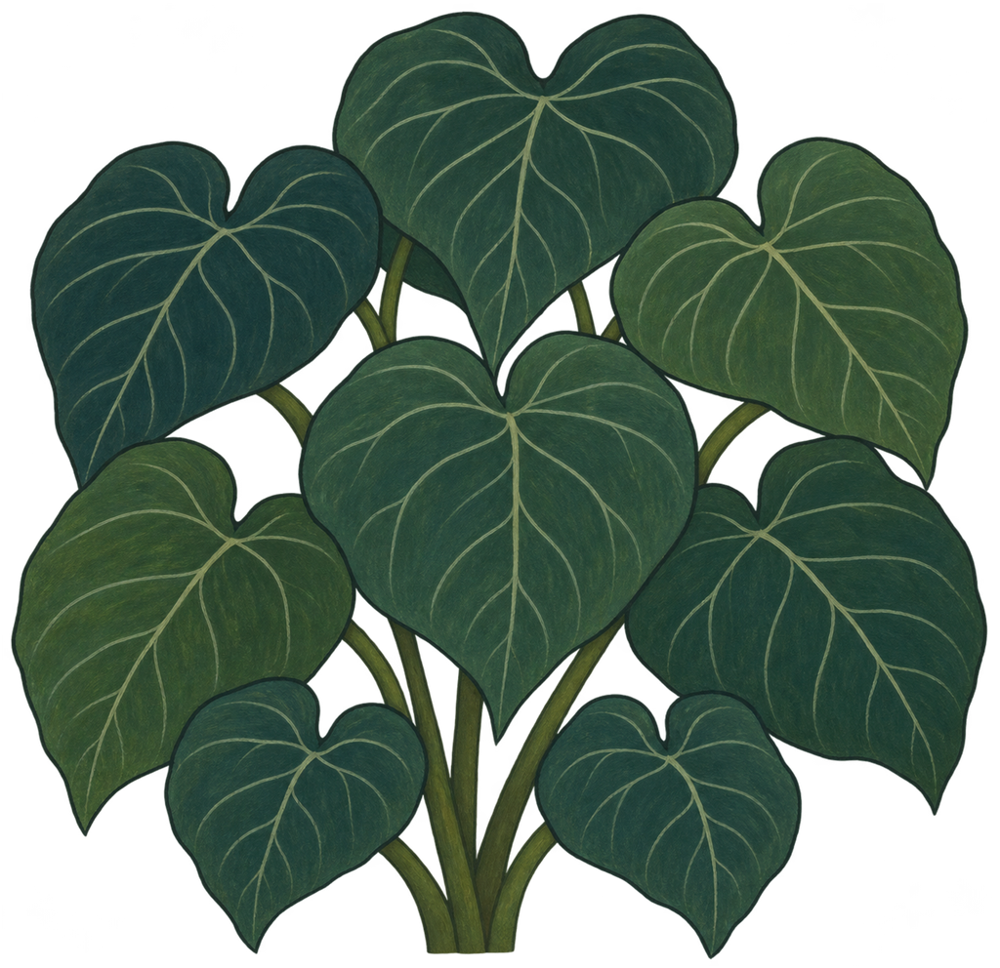
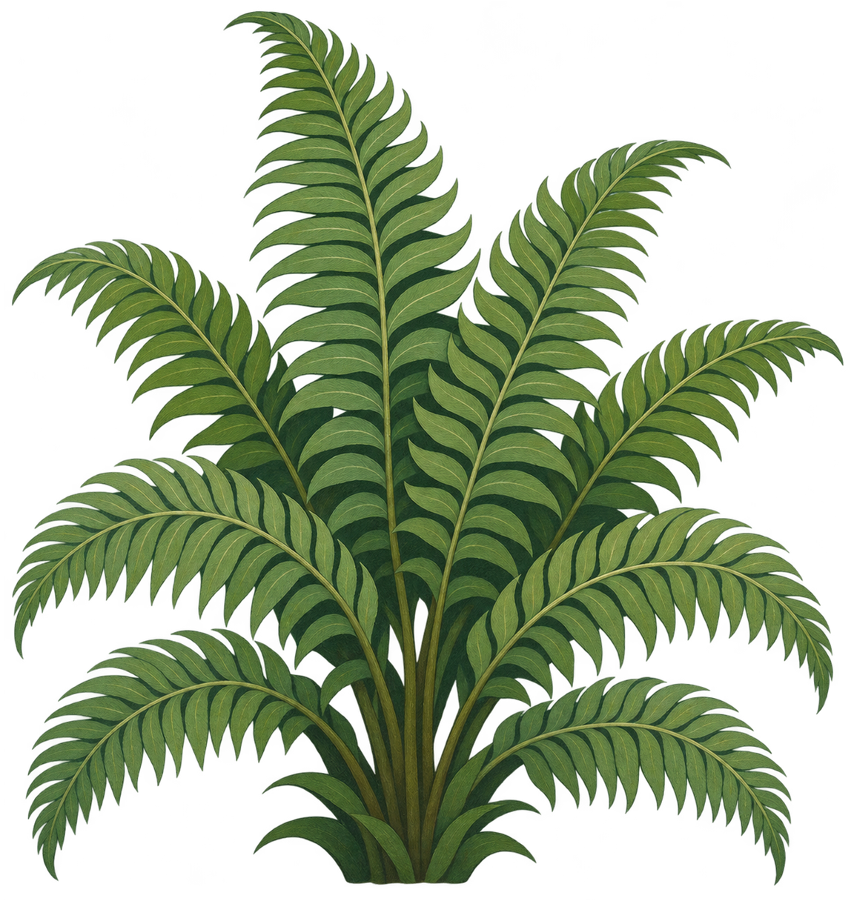
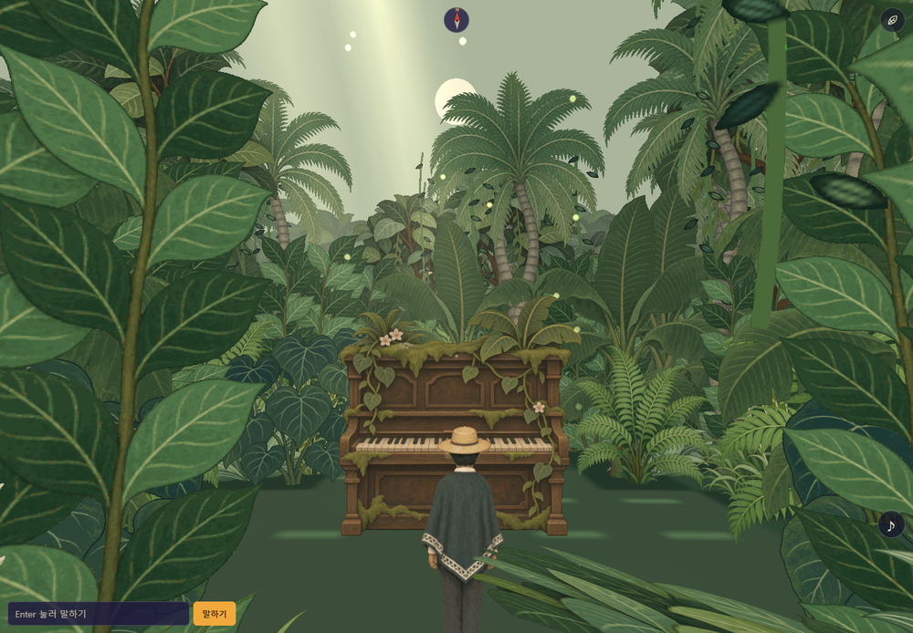
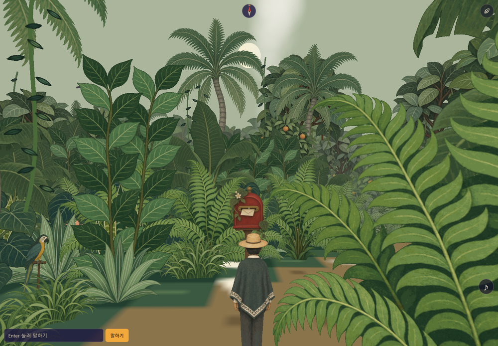

정글 · 배 교정과 첫 5개
2026년 11월 5일 · 실제 게임 렌더링 + 기존 에셋 비교. 게임 열기 ↗
배 — 같은 위치와 낮 시간의 전후 비교
게임 코드를 별도로 실행해 촬영했습니다. 주변 수풀과 게임 조명을 포함한 모습입니다.

기존 적용본
질감·명암·잎색 교정본기존 숲과 나란히 — 형태를 가리지 않은 비교

기존 나무
교정 배
기존 큰잎
기존 고사리첫 묶음 · 5개
게임 안에서

피아노
우체통현재 수풀 배치 때문에 일부 물건은 가려질 수 있습니다. 게임 구조·퍼즐 로직은 이번 에셋 작업에서 수정하지 않았습니다.